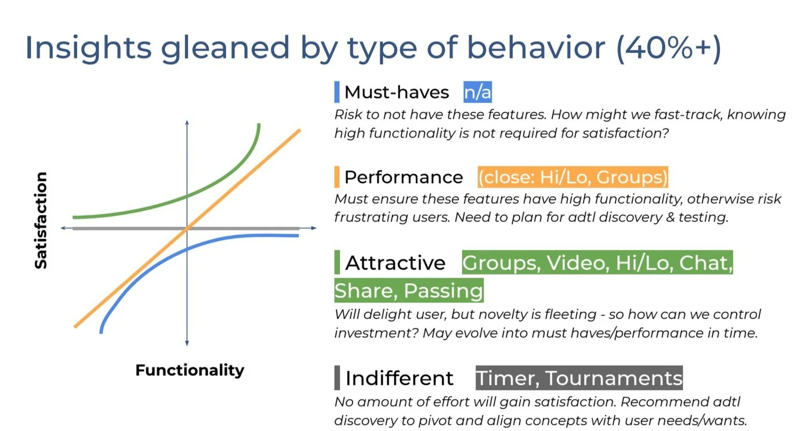
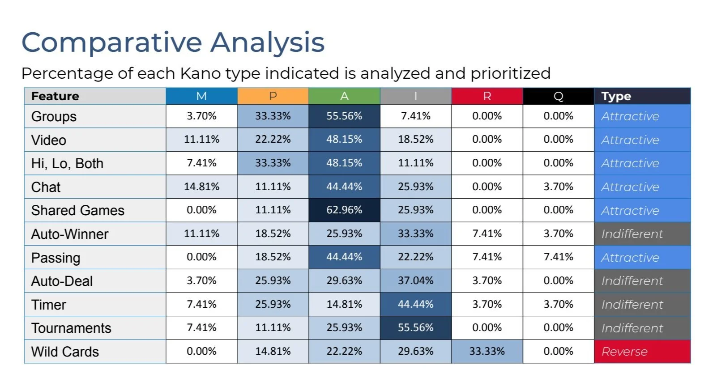
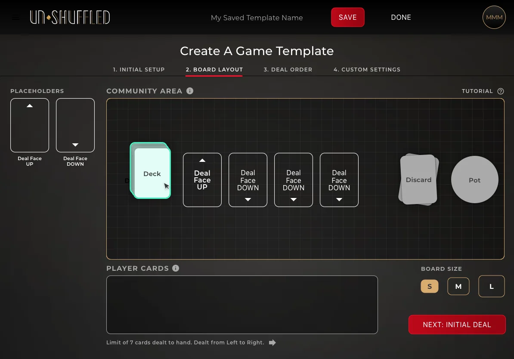
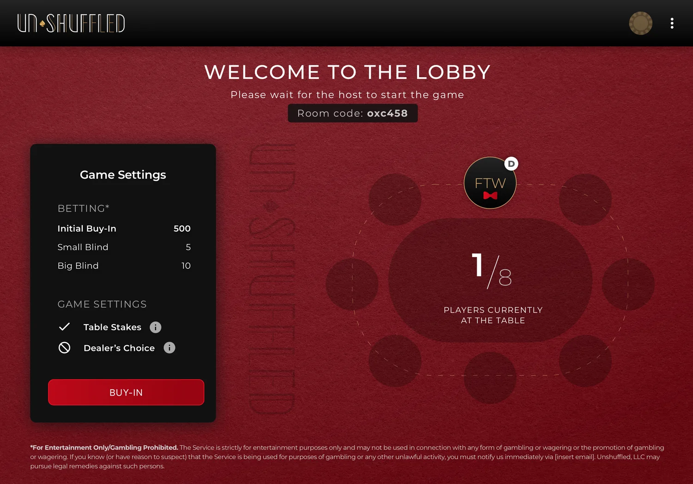

A social poker experience built in five months
At the start of the COVID-19 pandemic, a recent Stanford graduate set out to build a social-gaming startup to recreate the feeling of playing cards with friends around a table. In a crowded, flashy category, and with limited budget and time, the differentiation goal was to let people build their own games, a feature almost no one else supported.
That was also the hard part: custom game creation is powerful but easy to make overwhelming, and it had to feel effortless to non-experts while keeping the whole experience rich, tactile, and lean. Working with a small, agile team, we had five months to go from concept to launch; I led UX research, product design, and UI interaction.

Researched and prioritized ruthlessly
I ran lightweight interviews and preference testing, then a Kano survey to separate must-haves from nice-to-haves and features to avoid. It validated the bet early: people were eager for custom games and social connection, and indifferent to traditional poker-app fluff.


Prototyped and tested the hard flows
I built clickable prototypes for the trickiest flows, game creation, custom dealing logic, and onboarding, then iterated on real usability feedback to reduce overwhelm, with clear touch targets, in-app tutorials, and visual cues guiding people through custom setup.

Designed a rich, tactile interface
I extended the visual designer's concept, deep reds, greys, and felt textures, into high-fidelity screens across onboarding, room creation, gameplay, and settings, keeping the feel of an upscale poker room while making room for user-defined games.

Launched Unshuffled, and people actually loved it
We shipped the first version of Unshuffled within five months, a genuinely new kind of poker experience: personal, flexible, and social. It gave people the power to create and play their own card games, delivered an elegant interface that stood out in a flashy market, and made research and feedback part of the product's DNA. We successfully launched a social poker experience that made building users' own games feel effortless and game night feel real.
"Unshuffled is convenient, fun, and very close to a live experience. In my humble opinion, it's the only way to enjoy online poker with family and friends."— David W.
"Unshuffled does a wonderful job recreating the experience of a home game. It feels like we're sitting around a table together, having natural conversations and playing poker."— Keith V.
"I've used Unshuffled to catch up with old friends and meet new colleagues at work, and it has never let me down. The video, audio, and overall UI make playing online feel like you're playing in person."— Aaron H.
"I started using Unshuffled to stay connected with friends during the pandemic, but we loved it so much we're going to keep using it. It's just simple, easy, and so fun."— Solomiya K.